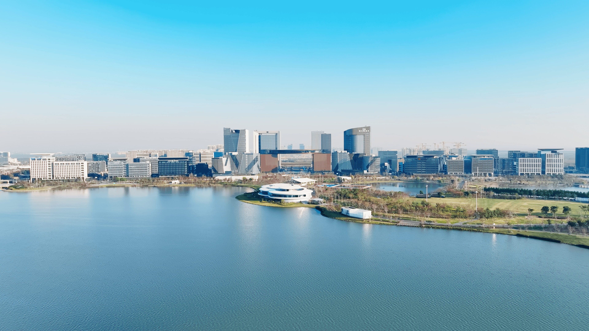
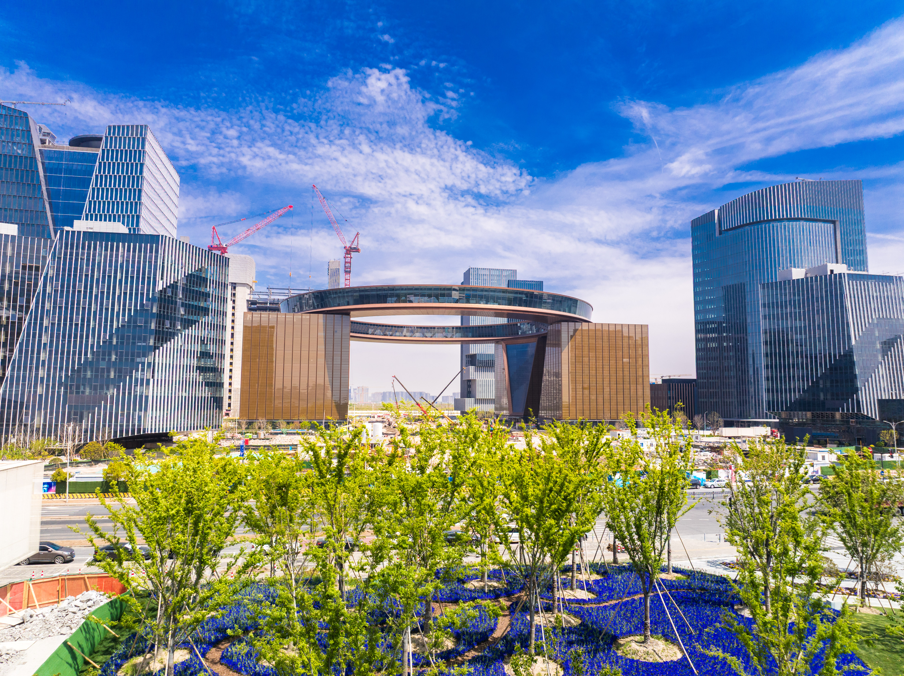

【核心事实】
项目名称：荣耀之环（Glory Ring）
位置：临港新片区 · 滴水湖金融湾核心区
定位：上海五大新城地标之一（2026年7月上海发布专题报道）
建设状态：外立面完工、2025年已全面亮灯，商业空间即将开放
关键参数：总商业空间超 89 万㎡，圆环直径 153 米，环顶高 56.15 米，钢结构重 1.1 万吨
造型：金色飞碟状，悬浮于 4 栋 46 米商办楼之上
来源：解放日报 2026.1 · 临港集团 2026.7 · 上海发布 2026.7 · 央视财经 2026.1
1
一座"飞碟"落在了滴水湖边
荣耀之环全景 —— 临港新片区管委会官网发布（2025年4月 · 哈苏拍摄）
如果你最近路过临港滴水湖金融湾，一定会注意到这个已经亮了一整年的大家伙。
它不是写字楼，不是购物中心，而是一个被称为"荣耀之环"的巨型环形建筑。远看像一只金色的飞碟悬在 4 栋高楼之间，近看才能体会到它的体量——直径 153 米，环顶高 56 米，钢结构总重 1.1 万吨。
1.1 万吨钢结构是什么概念？差不多是 1.5 个埃菲尔铁塔的用钢量。
由国际顶尖设计团队 Ennead 操刀，这个环不是贴在楼顶上的装饰，而是真的"悬浮"——横跨在 4 栋 46 米高的商办楼之间，把金融湾一期东西两侧的核心功能区串在了一起。幕墙总面积 2.57 万㎡，2025 年全年做完外立面，年底正式亮灯。
今年 7 月，荣耀之环登上"上海发布"视频号，作为上海五大新城地标之一亮相"青春新城"专题。这意味着它已经不再只是临港自己的地标，而是整个上海新城建设的脸面。
2
夜幕下的"璀璨绽放"
2025 年 12 月 30 日晚，总台"2025 上海金融之夜"现场，荣耀之环首次大规模亮灯——153 米直径的圆环通体金黄，灯光沿着钢结构的轮廓流淌，像一条漂浮在滴水湖面上的金色丝带。
那一刻，滴水湖金融湾的夜空被彻底点亮了。

2025 上海金融之夜 · 荣耀之环首次大规模亮灯（央视财经 2026年1月 摄）
站在 56 米高的环顶，360 度全景视野把整个滴水湖尽收眼底。这个环不仅是视觉符号，更是一个可以走上去的"空中观景台"。
目前官方公布的空间数据：
• 89 万㎡ 商业空间 — 比环球金融中心还大
• 7500+ ㎡ 市民文化场地 — 展览、论坛、公共艺术
• 2.8 万㎡ 公共开放区 — 湖边步道、下沉广场、露天咖啡
一个有意思的细节：它拿了钢结构幕墙数字建造技术应用一等奖——这个环不是手工焊出来的，是靠数字技术高精度拼起来的。解决了超大直径、超大跨度空间钢结构的施工难题。

荣耀之环侧面近景 —— 临港新片区管委会官网发布（2025年4月）
3
对普通人来说，这意味着什么？
如果你是住在临港的居民：
你终于不用每次购物都跑市区了。89 万㎡的商业空间，意味着旗舰购物中心、餐饮集群、电影院、亲子乐园基本都会配齐。目前临港已经有港城新天地、宝龙广场，但规模和品类都还比不过市区同级别商圈。荣耀之环补上的，是"家门口就能解决的一站式消费"。
如果你是在临港工作的上班族：
午休和下班后多了一个好去处。从金融湾的写字楼步行过去也就 5 分钟，湖边坐一坐、吃个简餐、周末带家人过来逛，这些日常场景终于有了一个像样的承载地。
如果你是偶尔来滴水湖游玩的游客：
环湖观光 + 荣耀之环打卡，可能成为滴水湖的"标准行程"。今年上海旅游节花车巡游、烟花秀都在滴水湖办过，未来荣耀之环大概率会是这类活动的主会场。晚上亮灯之后去拍照，效果应该会非常出片。
4
还有几个未知数
建筑完工了，灯亮了，地标上了"上海发布"，但商业什么时候开还没说死。1 月的报道说"今年上半年"，现在已经 10 月了。内部装修和业态招商应该还在紧锣密鼓地进行中，最快可能年底，慢的话明年初。
另一个未知数是交通。目前金融湾周边主要靠 16 号线滴水湖站和公交，打车也方便。但荣耀之环开业后人流量上去，周边停车和接驳会不会成为新问题，还需要观察。好消息是今年 9 月 16 号线已经加开了工作日午间直达车。
最后一个细节：荣耀之环的"环"，会不会真的环湖？从目前公开的信息看，它是环形建筑，但还没说是否完全圈住滴水湖的某个区域。更像是一个自洽的环形体量落在金融湾的地块上，与滴水湖之间还隔着一片公共绿地。
目前荣耀之环外立面已完工，金色的环形轮廓在环湖路沿线清晰可见，作为五大新城地标已经"亮"了起来。但 89 万㎡商业什么时候开、招商了哪些品牌、开业会不会搞活动——这些信息都还没放出来。
我们会持续跟进最新进展，有第一手消息会第一时间更新。
— 关注我，持续更新临港滴水湖最新动态 —
互动话题：你最期待荣耀之环里有什么业态？留言聊聊～